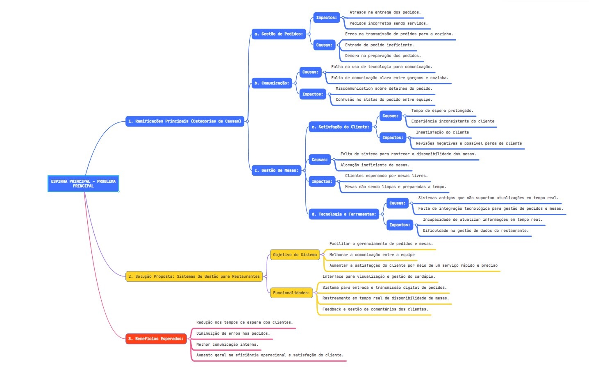
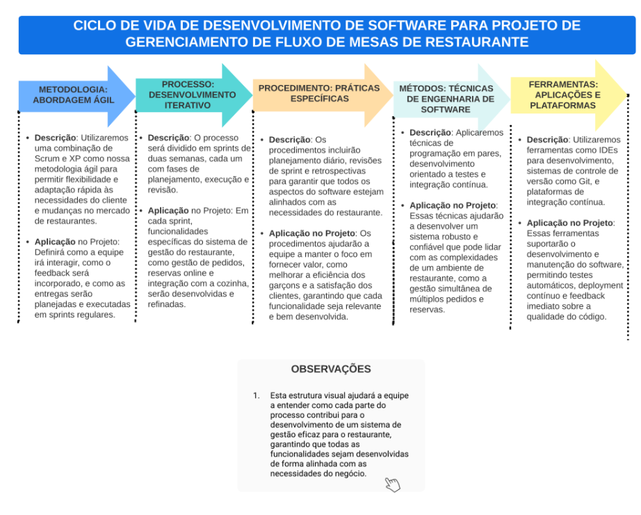

Visão geral do produto
Problema

link para melhor visualização da imagem
https://mm.tt/app/map/3230938191?t=uhP9sTWNg1
Tendo em vista que o mercado de restaurantes e estabelecimentos alimentícios em geral costumam ter requisitos funcionais muito variáveis, a metodologia ágil se demonstra muito compatível com as necessidades do mercado de software no ramo alimentício. Dessa forma, foi desenvolvido um sistema capaz de suprir as necessidades gerais de um restaurante, tendo em mente o potencial adaptativo da metodologia ágil.
O sistema se propõe a apresentar o cardápio do restaurante, realizar pedidos, que são agrupados pela entidade garçom e repassados para a cozinha, onde se recebe o pedido. Assim, o pedido pronto é retornado pela cozinha, onde são agrupados pela entidade garçom e entregue as mesas.
Logo, o sistema tem como objetivo resolver o problema de gestão de fluxo das mesas, e por consequência, seus pedidos e comandas.
Declaração de Posição do Produto
O sistema se difere dos demais do mercado por evitar uma aproximação genérica e uniforme para abordar os problemas apresentados por um ramo tão diverso como o ramo de restaurantes. A metodologia ágil possibilita que seja possível confeccionar um produto com alta customização. Assim, ao adquirir o produto, o cliente pode solicitar mudanças estruturais para fazer com que seus clientes tenham uma experiência melhor, e seus funcionários consigam operar de forma mais eficiente e eficaz.
Objetivos do Produto
O produto é capaz de realizar o registro dos pedidos do restaurante, além de integrar as partes necessárias para que a experiência do cliente seja entregue. Ao utilizar a metodologia ágil, esse sistema abre a possibilidade de alterações para se adequar melhor às necessidades de cada cliente, sendo um possível apresentar um produto único para cada cliente.
Tecnologias a Serem Utilizadas
A escolha de tecnologias adequadas é fundamental para o sucesso de qualquer projeto de software. Para o desenvolvimento do nosso sistema de gestão para restaurantes, utilizaremos um conjunto de tecnologias modernas e eficazes para as partes de front-end e back-end, juntamente com metodologias ágeis para garantir um processo de desenvolvimento adaptativo e iterativo.
3. Linguagens de Programação
Front-End:
As tecnologias de front-end, como HTML, CSS e JavaScript, são essenciais para a construção de interfaces de usuário interativas (MEYER, 2020; FLANAGAN, 2020).
HTML:
Será utilizado para construir a estrutura básica das páginas web do nosso sistema. HTML é essencial para organizar o conteúdo e os elementos visuais que os usuários interagem diretamente.
CSS:
Com CSS, utilizaremos as páginas web para oferecer uma interface atraente e responsiva. CSS é crucial para garantir que nosso aplicativo seja visualmente apelativo e fácil de usar em diferentes dispositivos e tamanhos de tela.
JavaScript:
JavaScript será usado para criar interações dinâmicas nas páginas web, melhorando a experiência do usuário ao permitir respostas rápidas a suas ações sem necessidade de recarregar a página.
Flutter:
Embora tradicionalmente usado para desenvolvimento móvel, optamos por utilizar Flutter também para o front-end para aproveitar sua capacidade de criar interfaces de usuário ricas e customizáveis tanto para web quanto para aplicativos móveis, garantindo uma experiência consistente em todas as plataformas.
Back-End:
Scrum:
Scrum será adotado para gerenciar o projeto através de sprints curtos e reuniões regulares, como as dailies, sprint reviews e retrospectivas. Esta metodologia favorece a adaptabilidade e o feedback contínuo, essenciais para atender às necessidades em constante mudança de um ambiente de restaurante.
Extreme Programming (XP):
Em conjunto com Scrum, o XP será utilizado para aprimorar as práticas de desenvolvimento de software. XP enfatiza a comunicação constante, feedback, simplicidade e coragem. Práticas como programação em pares e desenvolvimento orientado a testes garantirão a qualidade do código e a rapidez na entrega de funcionalidades.
Ciclo de vida do projeto de desenvolvimento de software
O desenvolvimento e lançamento do aplicativo irá envolver várias etapas de entrega, como por exemplo, versão beta, versão de teste de interface e versão final.
Versão Beta
- a versão beta terá que explorar o aplicativo para que o cliente possa fornecer feedback sobre de usabilidade e trazer experiência do usuário para aprimoramento.
- Verificação das funcionalidades e correção de bugs.
- Melhoria da velocidade e eficiência do aplicativo.
Testes de Usabilidade:
Testes Funcionais:
Otimização de Desempenho:
Segunda Versão de Teste
Com base no feedback da versão beta testers, a equipe faz ajustes e aprimoramentos. Uma segunda versão de teste é lançada para validar as mudanças. Além disso, o software contará com a implementação de algumas funcionalidades essenciais.
Entrega Final
A entrega final consiste em entregar o software pronto para ser validado pelo cliente e em seguida ser lançado
Organização do Projeto

Planejamento das Fases e/ou Iterações do Projeto
| Sprint | Produto | Data Início | Entregável(eis) | Responsaveis | % conclusão | |
|---|---|---|---|---|---|---|
| Sprint 1 | Estrutura do site e página inicial funcional | 01/07/2024 | 14/07/2024 | Layout do site e navegação básica Página inicial com informações do restaurante e banner promocional | Patrick e Pedro | 100% |
| Sprint 2 | Implementação de funcionalidades essenciais | 15/07/2024 | 8/07/2024 | Sistema de reservas online com integração ao calendário do restaurante Menu digital com fotos e descrições dos pratos Página de "Sobre Nós" com a história do restaurante e equipe | Emivalto | 100% |
| Sprint 3 | Adição de funcionalidades e integrações para aprimorar a experiência do usuário | 29/07/2024 | 11/08/2024 | Sistema de pedidos online para garçons e chefs Página de blog com notícias e promoções do restaurant | Patrick e João Lucas | 100% |
| Sprint 4 | Versão Beta completa do site do restaurante | 12/08/2024 | 31/08/2024 | Testes de usabilidade e correção de bugs Treinamento da equipe do restaurante para utilização do site Lançamento da Versão Beta do site | João Lucas e Emivalto | 100% |
Fonte: Emivalto, 2024
Matriz de Comunicação
| Descrição | Área/ Envolvidos | Periodicidade | Produtos Gerados |
|---|---|---|---|
| Acompanhamento das Atividades em Andamento | Equipe do Projeto | Duas vezes por semana | Relatório de situação do projeto |
| Acompanhamento dos Riscos, Compromissos, Ações Pendentes, Indicadores | Equipe do Projeto | Quinzenal | Relatório de situação do projeto |
| Comunicar situação do projeto | Equipe,Prof/Monito | Semanal |
Fonte: Emivalto, 2024
Gerenciamento de Riscos
Risco de falhas de comunicação entre a equipe de desenvolvimento e os stakeholders:
- Grau de exposição:
- Alto
- Mitigação:
- Estabelecer canais de comunicação claros e frequentes com os stakeholders.
- Definir um responsável pela comunicação entre a equipe e os stakeholders.
- Realizar reuniões periódicas para apresentar o progresso do projeto e coletar feedback.
- Utilizar ferramentas de comunicação online, como chats e videoconferências.
- Plano de contingência
- Em caso de falhas de comunicação, realizar uma reunião imediata para identificar o problema e buscar soluções.
- Documentar todas as decisões e comunicá-las aos stakeholders.
- Treinar a equipe em comunicação eficaz.
Previsões de adaptações frequentes às necessidades do usuário e do ambiente do restaurante:
- Grau de exposição:
- Médio
- Mitigação:
- Adotar uma metodologia de desenvolvimento ágil que permita adaptações rápidas às mudanças.
- Desenvolver um sistema modular que facilite a implementação de novas funcionalidades.
- Realizar testes de usabilidade frequentes para garantir que o sistema atenda às necessidades dos usuários.
- Manter um bom relacionamento com os stakeholders para entender suas necessidades e expectativas.
- Plano de contingência
- Se as adaptações forem muito frequentes, reavaliar o escopo do projeto e negociar novas entregas com os stakeholders.
- Priorizar as adaptações mais importantes e adiar as menos urgentes.
- Comunicar as mudanças aos stakeholders de forma clara e transparente.
Capacidade produtiva da equipe de desenvolvimento perante o prazo:
- Grau de exposição:
- Médio
- Mitigação:
- Planejar o projeto de forma realista e levar em consideração a capacidade da equipe.
- Monitorar o progresso do projeto e identificar possíveis atrasos.
- Comunicar os riscos aos stakeholders e buscar soluções conjuntas.
- Implementar ferramentas de gerenciamento de projetos para auxiliar no acompanhamento das tarefas
- Plano de contingência
- Se a equipe estiver atrasada, reavaliar o cronograma do projeto e negociar novos prazos com os stakeholders
- Contratar recursos adicionais, se necessário.
- Reduzir o escopo do projeto.
Conhecimento técnico da equipe de desenvolvimento:
- Grau de exposição:
- Baixo
- Mitigação:
- Contratar profissionais qualificados para o projeto.
- Oferecer treinamento à equipe sobre as tecnologias que serão utilizadas.
- Incentivar a participação da equipe em eventos e workshops da área.
- Criar um ambiente de aprendizado contínuo na empresa.
- Plano de contingência
- Se a equipe estiver atrasada, reavaliar o cronograma do projeto e negociar novos prazos com os stakeholders
- Contratar recursos adicionais, se necessário.
- Reduzir o escopo do projeto.
Critérios de Replanejamento
O processo de replanejamento deve seguir as seguintes etapas:
- Identificar a necessidade de replanejamento:
- A equipe de projeto deve monitorar o andamento do projeto e identificar se algum dos critérios de replanejamento foi atingido para atingir o êxito na execução de todas as etapas do projeto.
- Reunir a equipe de stakeholders:
- Uma vez que a necessidade de replanejamento tenha sido identificada, a equipe de projeto deve reunir-se com todos os stakeholders para discutir os motivos do replanejamento e as possíveis soluções, para resolver o quanto antes.
- Analisar as opções:
- A equipe de projeto deve analisar as diferentes opções de replanejamento e selecionar a melhor opção para o projeto para ser realizado a melhor planejamento.
- Atualizar o plano de projeto:
- O plano de projeto deve ser atualizado para refletir as mudanças feitas durante o processo de replanejamento.
- Comunicar as mudanças:
- As mudanças no plano de projeto devem ser comunicadas a todos os stakeholders.
- Monitorar e controlar o projeto:
- A equipe de projeto deve continuar a monitorar e controlar o projeto após o replanejamento para garantir que o projeto esteja no caminho certo para atingir seus objetivos.